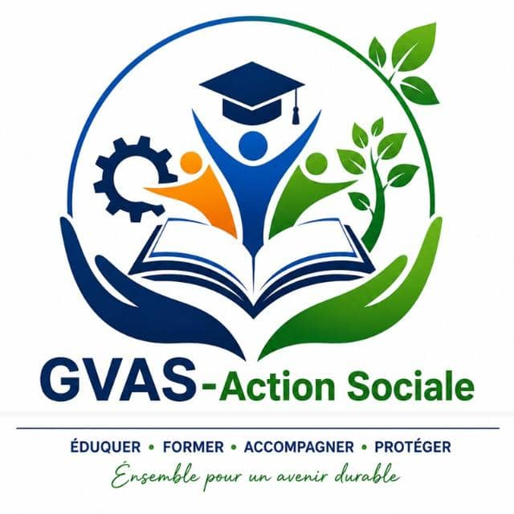

Depuis notre création, nous accompagnons les communautés à travers l'éducation, l'action sociale et le développement durable.
Découvrir qui nous sommesONG GVAS-Action Sociale est une organisation engagée dans l'amélioration durable des conditions de vie des populations. Elle intervient notamment dans les domaines de l'éducation, de la formation professionnelle, de l'accompagnement des jeunes, de l'action sociale, de la protection de l'environnement et du développement communautaire.
Foire aux questions
Nous intervenons dans le domaine de l'Éducation, formation et insertion des jeunes, action sociale et solidarité, protection de l’environnement, assainissement et développement communautaire
L’ONG a notamment réalisé des activités d’assainissement et de salubrité, avec la mobilisation de jeunes volontaires pour le nettoyage et l’entretien des espaces communautaires. Ces actions ont permis de renforcer la sensibilisation des populations sur l’importance de la propreté, de la gestion des déchets et de la protection de l’environnement.
Nous intervenons dans l'Éducation, Formation et Insertion des jeunes, action sociale et solidarité, protection de l’environnement, assainissement et développement communautaire.
En ce qui concerne notre expertise, leadership et entrepreneuriat orientation et accompagnement des apprenants, Opérations de nettoyage et de salubrité, curage et entretien des caniveaux, collecte et gestion des déchets, sensibilisation à la protection de l’environnement, promotion du tri, recyclage et valorisation des déchets, insertion et autonomisation des jeunes, accompagnement des jeunes vers l’emploi, développement de compétences professionnelles, entrepreneuriat et création d’activités génératrices de revenus mobilisation des jeunes autour des actions communautaires.
Afin d'accroître l'impact de ses actions, GVAS-Action sociale souhaite bénéficier un accompagement dans les domaines suivants: Renforcement des capacités institutionnelles, Formation des membres et volontaires, Accompagnement technique et matériel, Appui financier, Accompagnement dans la recherche de partenariats, Appui à la conception et au financement de projets, Communication et visibilité
Les principaux défis de GVAS Action Sociale sont la mobilisation de ressources financières et matérielles, le renforcement des capacités de ses membres et volontaires, la fidélisation des jeunes, le développement de partenariats institutionnels et privés, ainsi que la pérennisation de ses projets sociaux, éducatifs et environnementaux
GVAS Action Sociale souhaite développer des collaborations durables avec les collectivités locales, les administrations publiques, les entreprises privées, les ONG, les partenaires techniques et financiers ainsi que les organisations internationales.
Notre mission
Notre mission est de concevoir et de mettre en œuvre des programmes qui répondent aux besoins des communautés et contribuent à l'amélioration durable de leurs conditions de vie.
ÉDUCATION & FORMATION
Permettre aux jeunes et aux membres des communautés d'acquérir des connaissances et des compétences favorisant leur autonomie et leur insertion professionnelle.
JEUNESSE & AUTONOMISATION
Accompagner les jeunes dans leur développement, leurs initiatives et leurs projets afin de favoriser leur autonomie et leur participation à la vie de la communauté.
ENVIRONNEMENT & DÉVELOPPEMENT
Mettre en œuvre des actions solidaires répondant aux besoins des populations et contribuant à l'amélioration de leurs conditions de vie.
ACTION SOCIALE
Sensibiliser à la protection de l'environnement et soutenir des initiatives favorisant un développement durable des communautés.
Notre Gouvernance
La gouvernance de notre organisation repose sur une vision commune et sur la volonté de mettre les compétences de chacun au service de l'intérêt collectif. Elle s'appuie sur une organisation structurée permettant d'assurer la coordination, le suivi et la mise en œuvre de nos différentes activités.
Notre fonctionnement privilégie la collaboration entre les responsables, les équipes opérationnelles, les bénévoles et les différents acteurs qui contribuent à nos actions. Cette approche nous permet de mieux identifier les besoins des communautés, de définir des priorités adaptées et de mettre en place des initiatives répondant aux réalités du terrain.